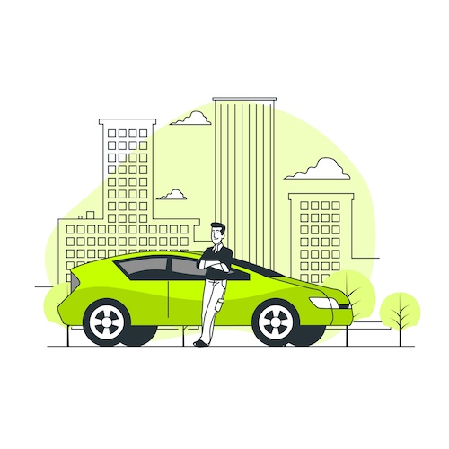
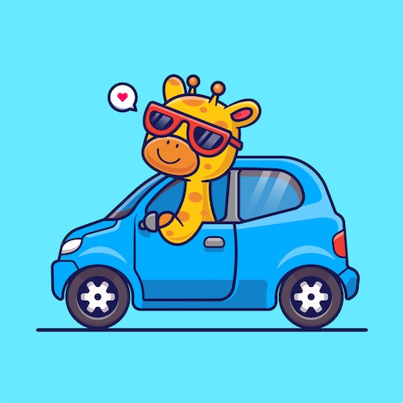

Une plateforme de co-voiturage responsable, soucieuse de
l’environnement .
Nous
Notre Equipe :
Nous sommes fier de vous presenter notre equipe engagée dans la revolution verte de nos deplacement. Notre team
se compose d'un community manager, Mateo, en charge du contenu posté sur ce site et les reseaux sociaux. Il est
en charge de répondre a toute vos question concernant notre plateforme et le service qu'elle propose. Nous avons
Léa, Mathilde et Corentin, en charge du developpement et de la maintenance de notre plateforme. C'est grace à
eux si l'application fonctionne bien et nous permet d'offrir un des meilleurs service de covoiturage en France.
Pourquoi nous choisir ?
Reduisez votre impact ecologique de 75% en utilisant notre plateforme de co-voiturage. Nous vous permettons de
voyager en toute securité et en respectant l'environnement.
Nous sommes la plateforme la plus simple et facile d'accés. L'experience que nous avons decide de vous faire
vivre est exceptionnel dans le domaine du co-voiturage, une plateforme facile à prendre en main, des chauffeurs
qui remplissent nos conditions et standard de voyage pour vous permettre de voyager en toute serenité et
securité.

MISSION
Réduire l’impact environnemental des déplacements en développant un espace web qui met en relation voyageurs et
chauffeurs qui cherchent une solution économique pour leurs déplacements.
Les avantages
Vos opportunitées
Creer du lien social en voyageant avec des personnes qui partagent les memes valeurs que vous. Vous avez la
possibilite de rencontrer des personnes de tout horizon et de partager des moments inoubliables avec eux. Vous
avez aussi la possibilite de voyager en toute securité et en respectant l'environnement.
Notre engagement
Soutnenir la cause ecologique est notre principale mission. Réduire par trois l'impact environnemental de
vos
deplacements est notre objectif. Participer à la revolution verte en utilisant notre plateforme de
co-voiturage.

VALEURS
Chez ECORIDE, nous prônons des valeurs écologiques pour une consommation responsable, une approche
pragmatique
de la résolution de problèmes actuels.
Nos meilleurs avis
Marie, 25 ans
"Je suis absolument ravi de mon expérience de covoiturage ! Non seulement j'ai économisé de l'argent par rapport
à un trajet en train, mais j'ai aussi rencontré des gens formidables. Le conducteur était très sympathique et la
voiture était confortable. L'ambiance était détendue et nous avons eu des conversations intéressantes tout au
long du trajet. C'est une excellente alternative pour voyager, à la fois économique et conviviale. Je recommande
vivement !" - Marie, 25 ans
Thomas, 35 ans
"C'était ma première expérience de covoiturage et je dois dire que j'ai été agréablement surpris ! Le conducteur
était super sympa et très ponctuel. La voiture était propre et confortable, et le trajet s'est déroulé sans
aucun problème. J'ai vraiment apprécié la convivialité et l'aspect économique de cette solution de transport.
C'est une excellente façon de voyager tout en faisant des rencontres intéressantes et en réduisant son empreinte
carbone. Je n'hésiterai pas à recommencer !"
CONTACT
Pour toute question ou information supplémentaire, n'hésitez pas à nous contacter par mail à ecoride@gmail.com
ou par téléphone au 0645309821.